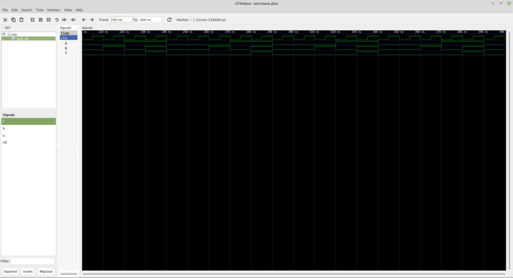

Intro to VHDL
Welcome everyone! Today we’re going to dive into VHDL, or hardware development. VHDL is actually one of my more recent interests. Although I first learned it and did some basic projects about a year ago, it wasn’t until this past semester that I really got deep into it when I created my first CPUs.
In this post, I’m going to introduce you to VHDL. I will talk about what it is used for, the overall concepts behind it, and conclude with a basic example. Please note that I assume some basic level of knowledge behind hardware and computer architecture. Electrical engineering knowledge isn’t required, but you should know roughly how a CPU works and the basics of digital logic.
Even if you don’t, I hope this post can at least give you a starting point with what you need to know if you are interested. Let’s dive in!
Hardware Descriptor Languages
VHDL and its close cousin, Verilog, are hardware descriptor languages (HDL). Fundamentally, VHDL and Verilog are very similar. The difference lies primarily in the syntax. VHDL is a modified subset of the Ada programming language, and according to the professor I learned this from, VHDL is more commonly used in academia. Verilog is meant to be more concise, and in a way resembles the C-style languages. While Verilog has its place in academia, it is more commonly used in industry.
So what is a hardware descriptor language?
Hardware descriptor languages are programming languages, but not in the conventional sense. A programming language is meant to program a computer. They hide the dirty details of the hardware and operating system interaction, allowing the programmer a clean interface to do what they need to do. You can think of a programming language modeling an idea for what you want the hardware to do.
Hardware descriptor languages describe the operation of a piece of hardware. They are not programming languages in the sense that they can be used for a programming task, ie viewing files. Hardware descriptor languages allow hardware to be modeled in an easy-to-understand way and tested thoroughly for correctness.
We’ll take this thought and dive deeper in a second. But first, why do I use VHDL?
Some of it is because VHDL is the first HDL that I learned and am more likely to use while I’m at school. I can go learn Verilog, but it doesn’t do me a lot of good if all my school projects require me use VHDL. The second reason is because I am familiar with Ada and really enjoy it. I find VHDL easier to understand because of its verbose nature.
Constructing Hardware
It is not an unreasonable thought to think that hardware, specifically CPUs, are designed with big circuit diagrams. To an extent they are, but the electrical part of CPUs are only half the process. The first step to designing a piece of hardware is model the logic.
CPUs are built on the principles of Boolean algebra. I will only touch on the basics here. Boolean algebra recognizes only two values: 0 and 1, also known as “true” and “false”, or “on” and “off”. This latter representation is why we can build computers. An electrical circuit can only be in one of two states: on or off. There is either current flowing through a circuit, or there is not.
Using these two values, we can start constructing the basic operations of Boolean algebra: AND, OR, XOR, and NOT. AND, OR, and XOR all take at least two inputs and have one output. The output of “AND” is only true if all inputs are true. OR is only true if at least one of the inputs are true. XOR is only true if at least one BUT not all the inputs are true. Finally, NOT simply inverts these inputs.
In normal math, whether algebra, calculus, or geometry, all complicated operations start with the four basic operations: add, subtract, multiply, and divide. In the same way, more complicated operations can be built in Boolean algebra using the basic AND, OR, XOR, and NOT operations. These operations can be built all the way up until you have a CPU.
HDLs are designed to model hardware from a Boolean algebra perspective. While you can use the basic logical operations, HDLs give you a number of constructs to make programming and modeling both easier and more accurate. Once you have a piece of hardware built, you can fully test it and see how it will perform.
This is the first step in designing. After your hardware works from a digital perspective, then you can move on to the electrical portion. This is where the physical properties of the hardware are determined, and eventually constructed. Because there is an almost 1:1 translation between HDLs and the underlying hardware components, the transition, if you will, is not huge.
HDLs can also be used to program a newer type of hardware, FPGAs (field programmable gate arrays). Most computer hardware is programmed in the sense that it loads and executes a program. For example, a CPU is not changed by a program it runs. Rather, it only performs tasks it is instructed to do within the confines of its architecture. An FPGA, by contrast, is literally programmable hardware. Using an HDL, you define what operations the hardware can do. In theory and actuality, an FPGA can be programmed as a specific hardware architecture (ie, RISC-V), and then execute a normal software program as a conventional CPU would.
A Simple Example
If I didn’t completely lose you at this point, let’s dive in to a simple example. This example is meant more to demonstrate how VHDL works rather than principles of digital logic. In this example, we will construct a simple AND gate. However, this AND gate is clocked, meaning that a new output is produced only when the clock pulse goes high.
First, let’s construct the AND gate component:
library ieee;
use ieee.std_logic_1164.all;
-- Define the signature of the 2-input AND gate
entity AND2 is
port(
clk : in std_logic;
A: in std_logic;
B: in std_logic;
F: out std_logic
);
end AND2;
-- Define the implementation of the 2-input AND gate
architecture basic of AND2 is
begin
process (clk)
begin
F <= A and B;
end process;
end architecture;
The code is very likely self-explanatory, but let me talk about VHDL more specifically. Every VHDL component is composed of two parts: an entity, and an architecture. The entity describes how the component looks from the outside. It lists the input ports and the output ports. The architecture describes how the component operates- the internal functions.
Now, let’s create the test bench:
library ieee;
use ieee.std_logic_1164.all;
entity and_tb is
end and_tb;
architecture behavior of and_tb is
-- Declare our component
component AND2
port(clk, A, B : in std_logic; F : out std_logic);
end component;
-- Bind to the component
signal clk, A, B, F : std_logic := '0';
-- Clock period definitions
constant clk_period : time := 10 ns;
begin
-- Initialize component
uut: AND2 port map(clk => clk, A => A, B => B, F => F);
-- Clock process definitions
I_clk_process : process
begin
clk <= '0';
wait for clk_period/2;
clk <= '1';
wait for clk_period/2;
end process;
-- Test process
stim_proc: process
begin
-- hold reset state for 100 ns.
wait for 100 ns;
wait for clk_period*10;
for i in 0 to 3 loop
A <= '0';
B <= '0';
wait for clk_period;
A <= '0';
B <= '1';
wait for clk_period;
A <= '1';
B <= '0';
wait for clk_period;
A <= '1';
B <= '1';
wait for clk_period;
A <= '0';
B <= '0';
wait for clk_period;
end loop;
wait;
end process;
end architecture;
The test bench is used for testing the component. While a VHDL component is supposed to directly model a piece of hardware, a VHDL test bench does not necessarily do the same. Although still part of the VHDL language, the VHDL test bench allows the use of more conventional programming constructs to make testing easier.
Notice in the test bench that there are two processes. A process is an independent operation or function that can affect the component we are testing. The first process is the clock. It alternates between high and low, and sends the current pulse to the AND gate we are testing. The second process tests the actual values. Within processes, we can wait on others. For example, after setting the inputs of the AND gate, we want to wait for the clock to emit a high pulse before checking the output (remember that the AND gate only changes its output based on the clock- it doesn’t matter if the inputs change first).
Although there are several VHDL IDEs and compilers, I generally use GHDL which can be found in the repositories of all major distributions. I also use GtkWave to view the results. Although VHDL test benches do have facilities to print to the screen, as you get into more complicated circuit modeling, you will want to view the internal signals of your component.
Here’s the Makefile I use to build and run:
# The files
FILES = src/and.vhdl
SIMDIR = sim
SIMFILES = test/and_tb.vhdl
# GHDL
GHDL_CMD = ghdl
GHDL_FLAGS = --ieee=synopsys --warn-no-vital-generic
GHDL_WORKDIR = --workdir=sim --work=work
GHDL_STOP = --stop-time=500ns
# For visualization
VIEW_CMD = /usr/bin/gtkwave
# The commands
all:
make compile
make run
compile:
mkdir -p sim
ghdl -a $(GHDL_FLAGS) $(GHDL_WORKDIR) $(FILES)
ghdl -a $(GHDL_FLAGS) $(GHDL_WORKDIR) $(SIMFILES)
ghdl -e -o sim/and_tb $(GHDL_FLAGS) $(GHDL_WORKDIR) and_tb
run:
cd sim; \
ghdl -r $(GHDL_FLAGS) and_tb $(GHDL_STOP) --wave=wave.ghw; \
cd ..
view:
gtkwave sim/wave.ghw
clean:
$(GHDL_CMD) --clean --workdir=sim
And here’s the output in GtkWave. As you can see, our AND gate adheres perfectly to the AND truth table.

Conclusion
This concludes our intro the VHDL. The example I used is actually the starting code for all my VHDL projects, so you are welcome to use it. VHDL is a topic I really enjoy, so I will likely write more about it later on. Hopefully this made sense to you, and hopefully you found it helpful.
Thanks for reading!